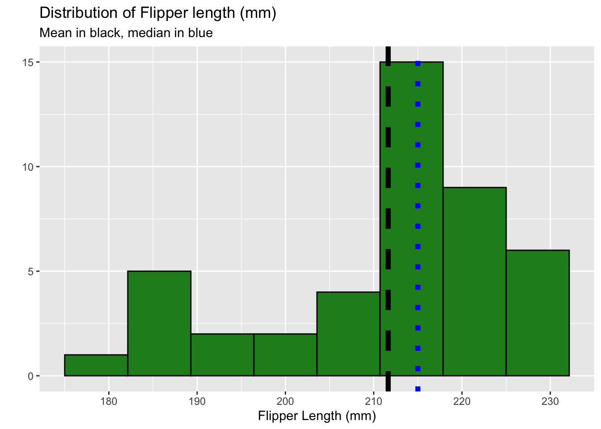
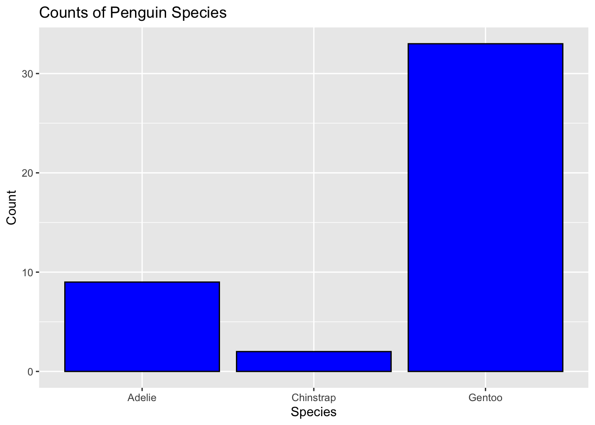
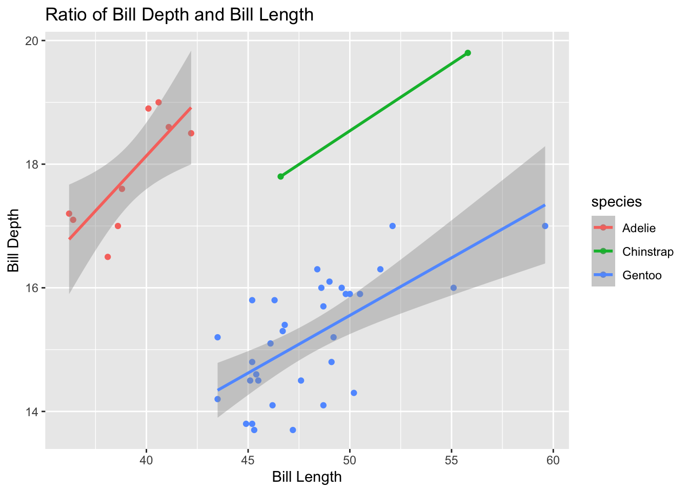
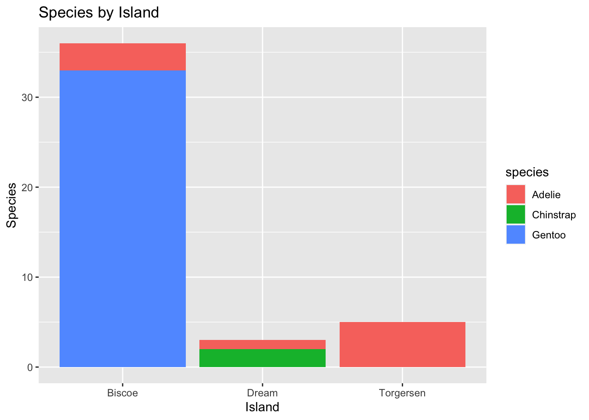
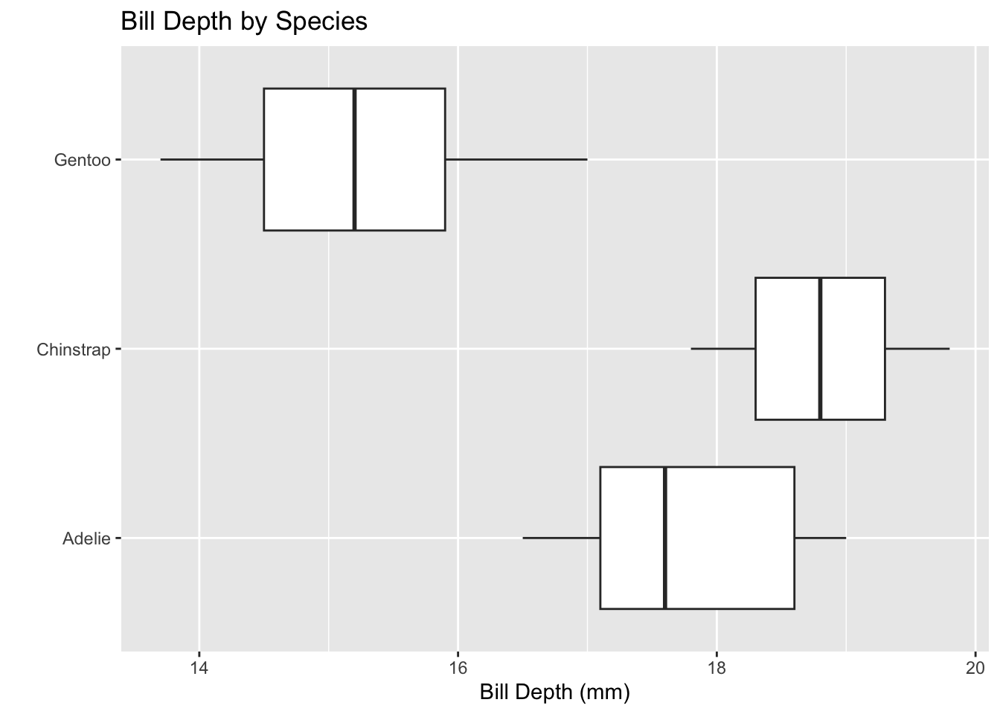

Attaching package: 'kableExtra'
The following object is masked from 'package:dplyr':
group_rows
#Read the penguins_samp1 data file from githubpenguins <-read_csv("https://raw.githubusercontent.com/mcduryea/Intro-to-Bioinformatics/main/data/penguins_samp1.csv")
Rows: 44 Columns: 8
── Column specification ────────────────────────────────────────────────────────
Delimiter: ","
chr (3): species, island, sex
dbl (5): bill_length_mm, bill_depth_mm, flipper_length_mm, body_mass_g, year
ℹ Use `spec()` to retrieve the full column specification for this data.
ℹ Specify the column types or set `show_col_types = FALSE` to quiet this message.
#See the first six rows of the data we've read in to our notebookpenguins %>%head() %>%#if you want a certain number of rows -- add a number in the paranthaseskable() %>%kable_styling(c("striped","hover"))
species
island
bill_length_mm
bill_depth_mm
flipper_length_mm
body_mass_g
sex
year
Gentoo
Biscoe
59.6
17.0
230
6050
male
2007
Gentoo
Biscoe
48.6
16.0
230
5800
male
2008
Gentoo
Biscoe
52.1
17.0
230
5550
male
2009
Gentoo
Biscoe
51.5
16.3
230
5500
male
2009
Gentoo
Biscoe
55.1
16.0
230
5850
male
2009
Gentoo
Biscoe
49.8
15.9
229
5950
male
2009
In the data above we are looking at a data set of penguins. This data set tells us the species of the penguins, which island they are originated from, their bill length and bill depth, flipper length, the mass and sex of each penguin as well as the year they were born.
About our Data
The data we are working with is a data set on Penguins, which includes 8 features measured on 44 penguins. The features included are physiological features (like bill length, bill depth, flipper length, body mass, etc) as well as other features like the year the penguin was observed, the island the penguin was observed on, and the species of the penguin.
Interesting Questions to Ask
Questions I am interested in:
What is the average flipper length of each species?
What species has the penguin with the largest bill length?
What species has the penguin with the largest flipper length?
What is the largest flipper length?
What is the ratio of bill length to bill depth for a penguin? What is the overall average of this metric? Does it change by species, sex, or island?
What is the average body mass? What about by island? By species? By sex?
Are there more male or female penguins? What about per island or species?
Does average body mass change by year?
Data Manipulation
I will be using R code to learn how to manipulate the data, specifically to filter rows, subset columns, group data, and compute summary statistics.
penguins %>%count(island)
# A tibble: 3 × 2
island n
<chr> <int>
1 Biscoe 36
2 Dream 3
3 Torgersen 5
If we want to filter() and only show certain rows, we can do that too.
#we can filter by sex (categorical variables)penguins %>%filter(species =="Chinstrap")
# A tibble: 2 × 8
species island bill_length_mm bill_depth_mm flipper_le…¹ body_…² sex year
<chr> <chr> <dbl> <dbl> <dbl> <dbl> <chr> <dbl>
1 Chinstrap Dream 55.8 19.8 207 4000 male 2009
2 Chinstrap Dream 46.6 17.8 193 3800 fema… 2007
# … with abbreviated variable names ¹flipper_length_mm, ²body_mass_g
#we can also filter by numerical variablespenguins %>%filter(body_mass_g >=6000) #gives us penguins with a body mass of at least 6000grams
# A tibble: 2 × 8
species island bill_length_mm bill_depth_mm flipper_leng…¹ body_…² sex year
<chr> <chr> <dbl> <dbl> <dbl> <dbl> <chr> <dbl>
1 Gentoo Biscoe 59.6 17 230 6050 male 2007
2 Gentoo Biscoe 49.2 15.2 221 6300 male 2007
# … with abbreviated variable names ¹flipper_length_mm, ²body_mass_g
# A tibble: 7 × 8
species island bill_length_mm bill_depth_mm flipper_l…¹ body_…² sex year
<chr> <chr> <dbl> <dbl> <dbl> <dbl> <chr> <dbl>
1 Gentoo Biscoe 59.6 17 230 6050 male 2007
2 Gentoo Biscoe 49.2 15.2 221 6300 male 2007
3 Adelie Torgersen 40.6 19 199 4000 male 2009
4 Adelie Torgersen 38.8 17.6 191 3275 fema… 2009
5 Adelie Torgersen 41.1 18.6 189 3325 male 2009
6 Adelie Torgersen 38.6 17 188 2900 fema… 2009
7 Adelie Torgersen 36.2 17.2 187 3150 fema… 2009
# … with abbreviated variable names ¹flipper_length_mm, ²body_mass_g
Answering Our Questions
Most of our questions involve summarizing data, and perhaps summarizing over groups. We can summarize data using the summarize() function and group data using group_by().
Let’s find the average flipper length
penguins %>%#average for all speciessummarize(avg_flipper_length =mean(flipper_length_mm))
# A tibble: 1 × 1
avg_flipper_length
<dbl>
1 212.
penguins %>%#single species avg lengthfilter(species =="Gentoo") %>%summarize(avg_flipper_length =mean(flipper_length_mm))
# A tibble: 1 × 1
avg_flipper_length
<dbl>
1 218.
penguins %>%#average separated by species (grouped average)group_by(species) %>%summarize(avg_flipper_length =mean(flipper_length_mm))
# A tibble: 3 × 2
species avg_flipper_length
<chr> <dbl>
1 Adelie 189.
2 Chinstrap 200
3 Gentoo 218.
How many of each species do we have?
penguins %>%count(species)
# A tibble: 3 × 2
species n
<chr> <int>
1 Adelie 9
2 Chinstrap 2
3 Gentoo 33
penguins %>%count(sex)
# A tibble: 2 × 2
sex n
<chr> <int>
1 female 20
2 male 24
penguins %>%group_by(species) %>%count(sex)
# A tibble: 6 × 3
# Groups: species [3]
species sex n
<chr> <chr> <int>
1 Adelie female 6
2 Adelie male 3
3 Chinstrap female 1
4 Chinstrap male 1
5 Gentoo female 13
6 Gentoo male 20
What is the ratio of bill length to bill depth for a penguin? What is the overall average of this metric? Does it change by species, sex, or island?
We can mutate() to add new columns to our data set.
#average ratio by group penguins%>%group_by(species) %>%mutate(bill_ltd_ratio = bill_length_mm / bill_depth_mm) %>%summarize(mean_bill_ltd_ratio =mean(bill_ltd_ratio),median_bill_ltd_ratio =median(bill_ltd_ratio))
# A tibble: 2 × 3
island sex year
<chr> <chr> <dbl>
1 Dream male 2009
2 Dream female 2007
penguins %>%group_by(species) %>%summarise(mean_bill_depth_mm =mean(bill_depth_mm, na.rm =TRUE),sd_bill_depth_mm =sd(bill_depth_mm, na.rm =TRUE), ) #gives us a mean and sd avearage for each species bill depth
What is the distribution of penguin flipper length?
What is the distribution of penguin species?
Does the distribution of flipper length depend on the species of penguin?
How many penguins were observed per year?
Is there any correlation between the bill length and the bill depth? [scatter plot]\
Discussion: In the graph bar plot below we are looking at how many penguins per species were observed.
penguins %>%ggplot() +geom_bar(mapping =aes(x=species))+labs(title ="Counts of Penguin Species",x ="Species", y="Count")
penguins %>%ggplot() +geom_histogram(aes(x=flipper_length_mm),bins =8,fill ="forestgreen",color ="black") +labs(title ="Distribution of Flipper length (mm)", subtitle ="Mean in black, median in blue",x ="Flipper Length (mm)",y ="" ) +geom_vline(aes(xintercept =mean(flipper_length_mm)), lwd =2, lty="dashed") +geom_vline(aes(xintercept =median(flipper_length_mm)), lwd =2, lty="dotted", color ="blue")
Warning: Using `size` aesthetic for lines was deprecated in ggplot2 3.4.0.
ℹ Please use `linewidth` instead.

#more bins = more detail, aes goes back into the data set to find info
Discussion: In the histogram above we are looking at the distribution of flipper length in comparison to the mean and median.
We will now look at the distribution of species.
penguins %>%ggplot()+geom_bar(mapping =aes(x=species), color ="black", fill ="blue") +labs(title ="Counts of Penguin Species",x ="Species", y="Count")

Discussion: This bar plot depicts how many penguins of each species were observed in this dataset.
Scatter plot to see if bill length is correlated to bill depth.
penguins %>%ggplot() +geom_point(aes(x = bill_length_mm, y = bill_depth_mm, color = species)) +labs(title ="Ratio of Bill Depth and Bill Length",x="Bill Length", y ="Bill Depth") +geom_smooth(aes(x = bill_length_mm, y = bill_depth_mm, color = species), method ="lm")
`geom_smooth()` using formula = 'y ~ x'
Warning in qt((1 - level)/2, df): NaNs produced
Warning in max(ids, na.rm = TRUE): no non-missing arguments to max; returning
-Inf

penguins %>%ggplot() +geom_bar(mapping =aes(x = island, fill = species)) +labs(title ="Species by Island",x ="Island",y ="Species")

Discussion: This bar plot depicts how much of each species we observed on each of the three islands.
penguins %>%ggplot() +geom_boxplot(mapping =aes(x = bill_depth_mm, y = species)) +labs(title ="Bill Depth by Species",x ="Bill Depth (mm)",y ="")

A Final Question
This chunk of R code tells shows us the confidence interval for mean bill lengths.
One Sample t-test
data: penguins$bill_length_mm
t = 1.8438, df = 43, p-value = 0.07211
alternative hypothesis: true mean is not equal to 45
95 percent confidence interval:
44.87148 47.86943
sample estimates:
mean of x
46.37045
The average bill length for a penguin that was given from our observations is about 46 mm. This average is defined by only the subset we have observed (44) and cannot be used for the whole population. The data is inaccurate in having only two Chinstrap penguins and a load ful of Gentoo’s, therefore we can say this dataset does not to a good job at portraying the entire population of penguins in the world.